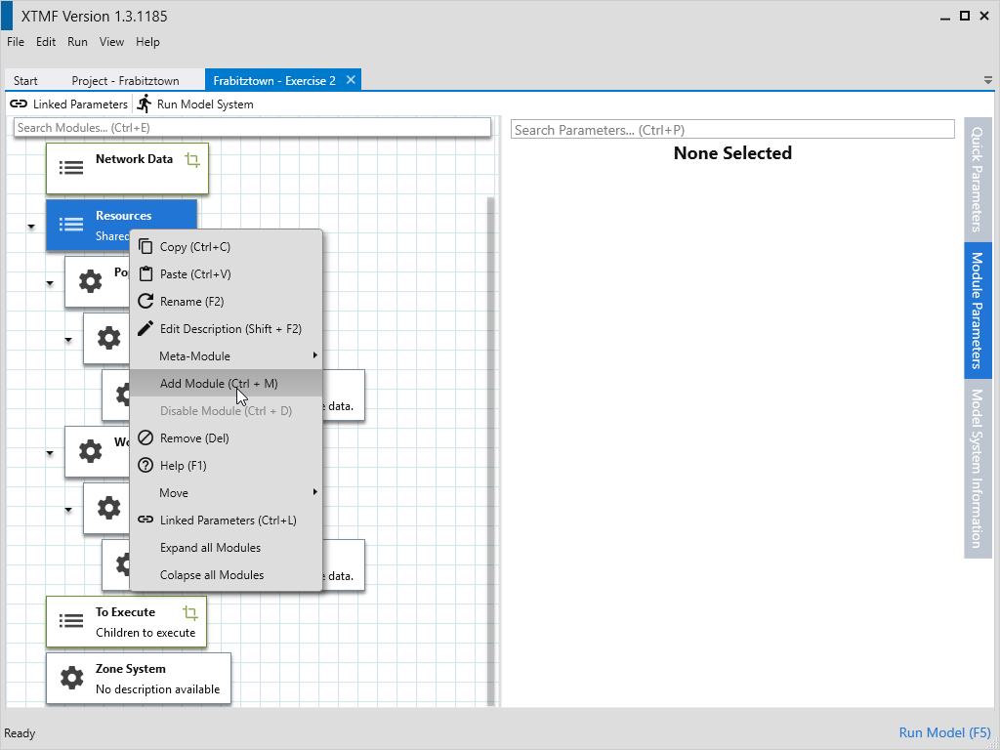

Exercise 1
1.1 - Create a Project
Create New Project named Frabitztown.
1.2 - Create a Model System
Create New Model System name Exercise 2
1.3 - Create a Root Module
- Click on the root module and either press Ctrl+M or right click and select Set Module.
- Search for the module type “BasicTravelDemandModule”
- Double click on the Module type “BasicTravelDemandModel” or press “Enter”
- Press Shift+F2 or right click and select “Edit Description” and write down the description “Trip Generation”
1.4 - Setting the Base Directory
- Set model system input base directory
- Select the module named “Exercise 2”
- Select parameter “Input Base Directory”
- Set the value to the location of the input directory
1.5 - Setting the Population Resource
- Create the Population Resource
- Select the resources module
- Create Module of Type Resource
- Rename module to “Population”
- Change Parameter “Resource Name” to “Population”
- Change Data Source to ZoneInformation
- Change Reader to ReadOriginTextData
- Update Parameter “File Name” to “Population.csv”

1.5 - Copy the Population Resource
- Click on the Population module and press Ctrl+C or right click and select “Copy”
- Click on “Resources” and paste by pressing Ctrl+V or right click and selecting “Paste”
- Click on the bottom Population and press F2 or right click and select “Rename”
- Type in “WorkParticipation” and then press Enter.
- Expand the module, and expand again the Data Source submodule
- Select Reader
- Change the parameter “File Name” to “WorkParticipationRate.csv”
- Click on the Population module and press Ctrl+C or right click and select “Copy”
- Click on “Resources” and paste by pressing Ctrl+V or right click and selecting “Paste”
- Click on last Population and press F2 or right click and select “Rename”
- Type in “EmploymentRate” and then press Enter.
- Expand the module, and expand again the Data Source submodule
- Select Reader
- Change the parameter “File Name” to “EmploymentRate.csv”
1.7 - Create Work Generation
- Select Resources and add a new module by pressing Ctrl+M or by right clicking and selecting “Add Module”.
- Select the type “Resource”
- Rename the module “Work Generation”
- Change the parameter “Resource Name” to “WorkGeneration”
- Select sub-module Data Source.
- Set the module type to VectorMath by pressing Ctrl+M or right clicking and selecting “Set Module”
- Change the name of the module to “Compute Work Trips By Zone”
- Select Data Sources
- Add a new module by pressing Ctrl+M or right clicking and selecting “Add Module”
- Search and select the type “RemoteDataSource
1” a second window will come up asking for the sub-type. Search for and select the type “DataStructure.SparseArray1”. Another window will come up for the subtype of the SparseArray. Now search and select the type “System.Single”. - Rename this module “Population”
- Change the parameter “Resource Name” to “Population”
- Copy Population and paste it into Compute Work Trips By Zone’s Data Sources.
- Rename the second copy of Population to “WorkParticipation”
- Change “WorkParticipations”’s parameter “Resource Name” to “WorkParticipation”
- Copy Population and paste it into Compute Work Trips By Zone’s Data Sources.
- Rename the second copy of Population to EmploymentRate
- Change “EmploymentRate”’s parameter “Resource Name” to EmploymentRate

1.8 - Calculate Work Generation Expression
- Select the module 'Compute Work Trips By Zone'
- Set expression to
Population * WorkParticipation * EmploymentRate
1.9 - Create Save Work Generation
- Select To Execute and add a module of the type “SaveSparseArrayToCSV”
- Select the created module and rename it to “Save Work Generation”
- Expand the module and select Data.
- Set the module type of Data to “ResourceLookup”
- Change the parameter “Resource Name” to “WorkGeneration”
- Select the module “Output To”
- Set the module type of “Output To” to "FilePathFromOuputDirectory".
- Change the value of the parameter “File From Output Directory” to “WorkGeneration.csv”
- Create Zone System
- Select the module named “Zone System”
- Set the module type to “ZoneRetriever”